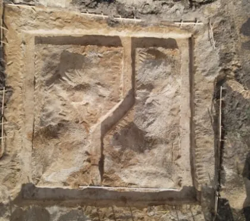
Nadzory archeologiczne
Obecność archeologa przy robotach ziemnych, obserwacja warstw w profilu i rzucie wykopu, dokumentacja opisowa i fotograficzna.
Czytaj więcej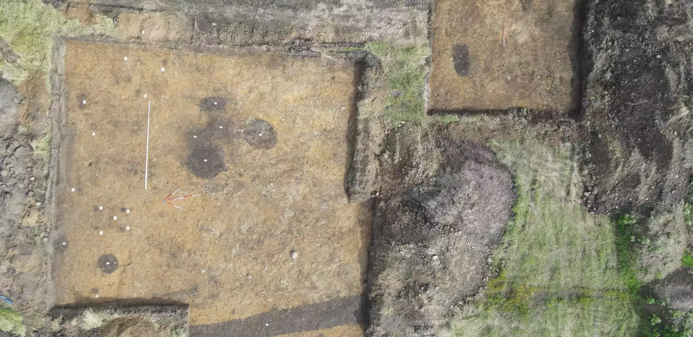
Firma archeologiczna · od 2010 roku · Dolny Śląsk i Opolszczyzna
Nadzory i badania archeologiczne przy inwestycjach, archeologia eksperymentalna, repliki zabytków i edukacja — prowadzone przez archeologów z pasją.
O nas
Archeoreplica od 2010 roku prowadzi nadzory i badania archeologiczne przy inwestycjach na Dolnym Śląsku. Inwestor otrzymuje wsparcie obejmujące sprawdzenie działki, formalności konserwatorskie, obecność archeologa przy robotach ziemnych, dokumentację znalezisk oraz opracowanie zabytków.
Działamy jako pośrednicy przy uzyskaniu zezwoleń konserwatorskich, a po zakończeniu prac opracowujemy materiał. Obsługujemy zarówno duże firmy, jak i klientów indywidualnych — budowy mieszkaniowe, przemysłowe i infrastrukturalne.
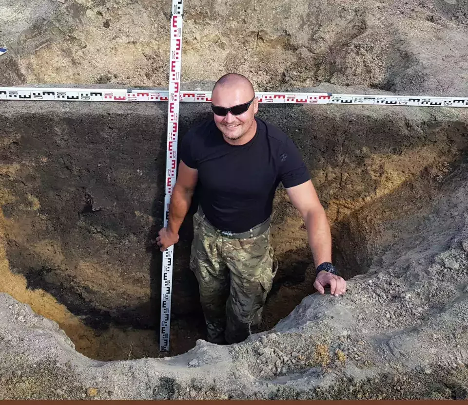
Oferta

Obecność archeologa przy robotach ziemnych, obserwacja warstw w profilu i rzucie wykopu, dokumentacja opisowa i fotograficzna.
Czytaj więcej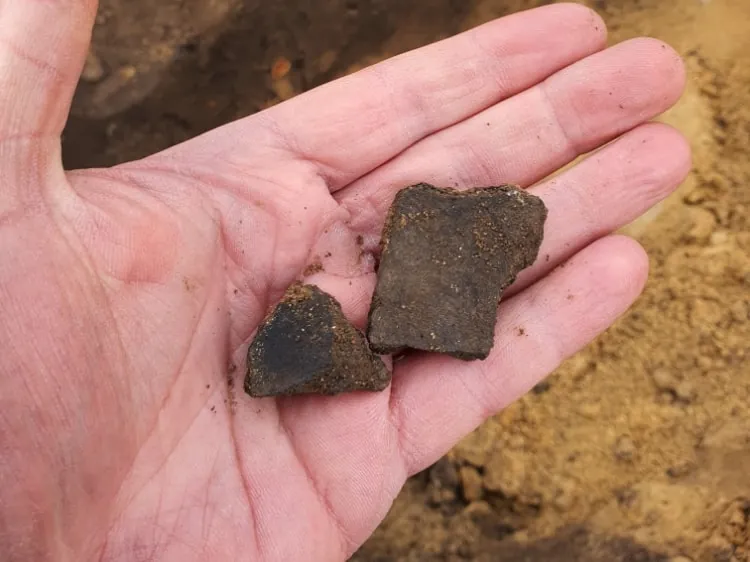
Badania wraz z dokumentacją reliktów i znalezisk — zakres dopasowany do decyzji konserwatorskiej i rodzaju gruntu.
Czytaj więcej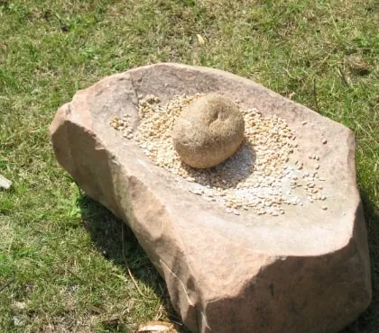
Lekcje, warsztaty, pokazy i festyny. Uczestnicy dotykają replik i sami próbują dawnych technik.
Czytaj więcej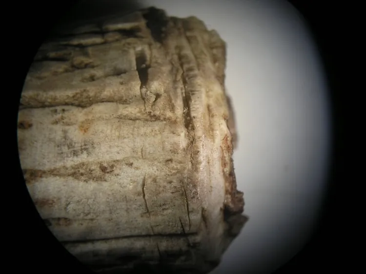
Publikacje i analizy traseologiczne. Najedź na zdjęcie — zobacz, co widzi archeolog pod mikroskopem.
Czytaj więcej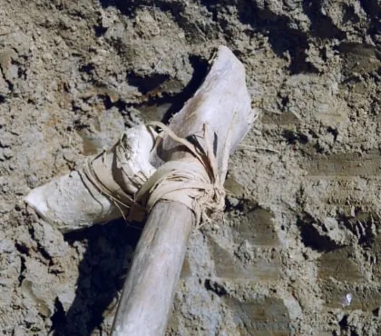
Odtwarzamy dawne technologie krok po kroku, by zrozumieć funkcję i sposób wykonania zabytków.
Czytaj więcej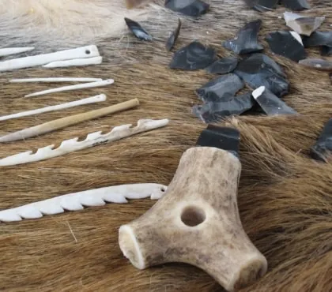
Wyroby z kości i poroża wykonywane ręcznie, narzędziami i technikami z danej epoki.
Czytaj więcejDla inwestora
Zaczynamy od analizy dokumentów planistycznych, danych archiwalnych i skali robót ziemnych. Dokumentację prowadzimy równolegle z pracami terenowymi — przy odkryciu reliktu reagujemy na miejscu.
Ewidencja, mapy i decyzje administracyjne dotyczące działki.
Przygotowanie wniosku i uzgodnień konserwatorskich.
Archeolog przy robotach ziemnych i rejestracja odkryć.
Opracowanie materiałów, raport i konserwacja zabytków.
Kreator · 30 sekund
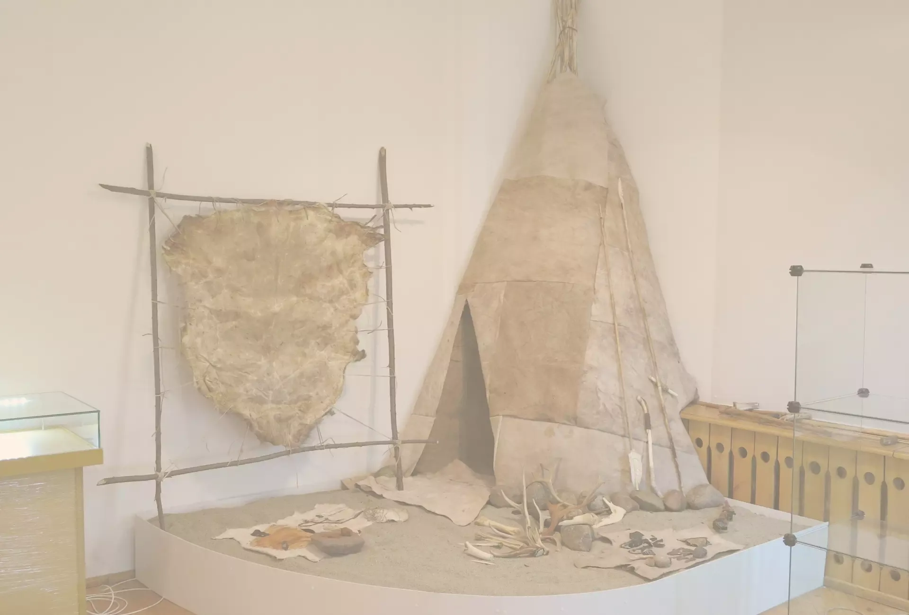
Rekonstrukcje, wystawy i pokazy — przeszłość, którą można zobaczyć z bliska.
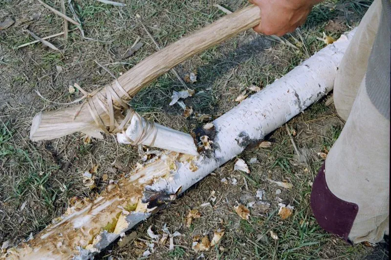
Archeologia eksperymentalna
Od niemal 10 lat prowadzimy badania eksperymentalne związane z technologią obróbki kości i poroża. Każdy eksperyment poprzedza analiza pod mikroskopami stereoskopowymi, metalograficznymi, cyfrowymi i skaningowymi — a każde doświadczenie powtarzamy kilkukrotnie.
Pod mikroskopem — przesuń kursorem lub palcem
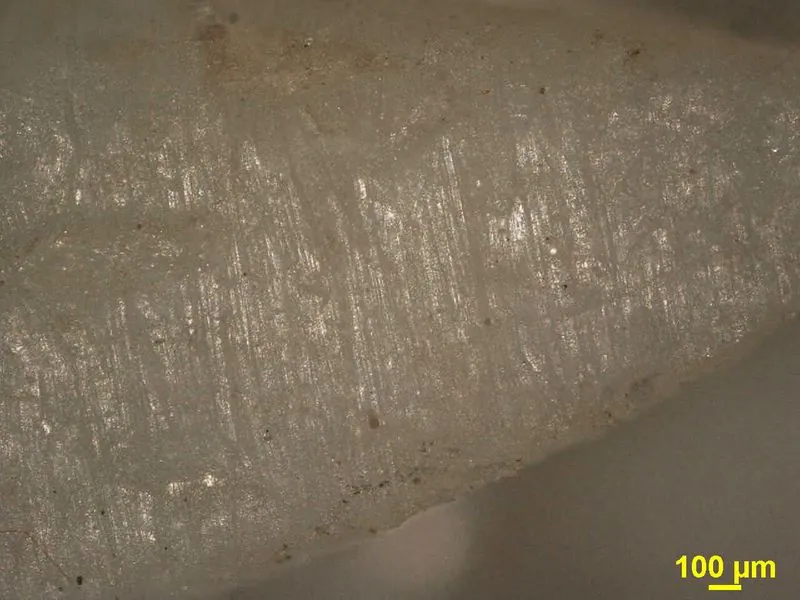
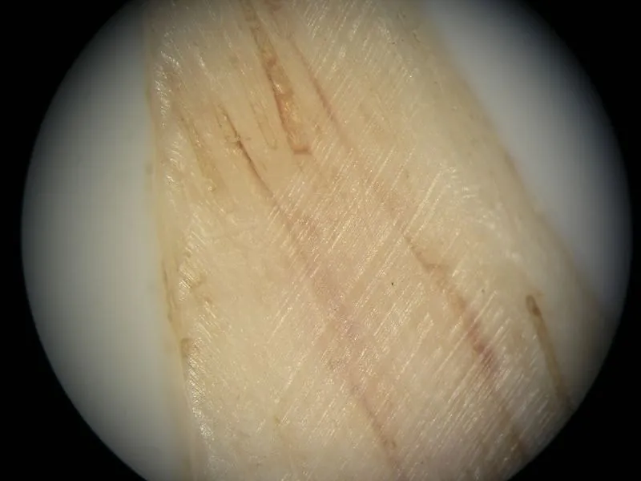
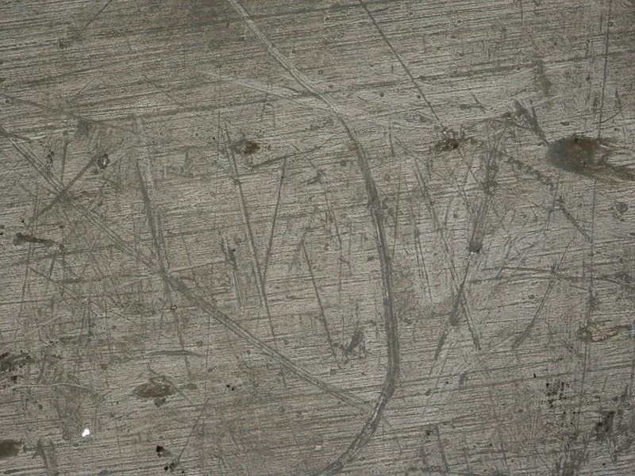
Repliki zabytków
Wszystkie repliki wykonujemy własnoręcznie, narzędziami i technikami z danej epoki — od epoki kamienia po czasy nowożytne. Sprawdź, czy rozpoznasz je bez podpisu.
Edukacja archeologiczna
Z naszych wykopów
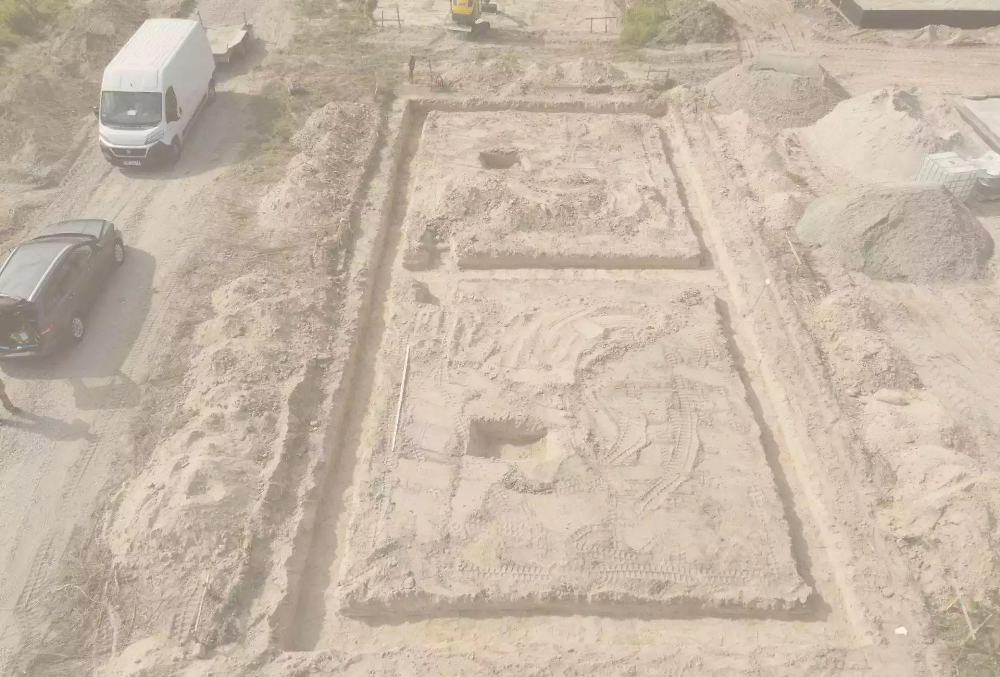
Kontakt
Działamy przede wszystkim na terenie województwa dolnośląskiego i opolskiego.